Glossary
- Walk time (PTk)
- From one neighbourhood: time the walk to five clinics and average those, do the same for five schools, then average the two. Minutes. Equation (1) in section 4.2.
- City walk time (PTcity)
- That neighbourhood walk, averaged across the city, counting neighbourhoods with more people more heavily. Ten minutes means a typical person is about a ten-minute walk from that mix of clinics and schools. Equation (2).
- F15
- Share of people whose neighbourhood walk is 15 minutes or less. If a city is 85%, about 85 in 100 live in a neighbourhood that meets that bar. The main 15-minute-city score. Equation (3).
- Gini
- How uneven those walks are, from 0 (everyone waits the same) to 1. F15 counts how many people are inside 15 minutes; Gini says whether the rest of the line is flat or has a long far tail. A high Gini can sit next to a high F15. Equation (4).
- n (choice of nearby places)
- How many clinics or schools count toward the average. The headline is five, because one nearby place is too easy and twenty is the rule used by Bruno et al. (2024). Table 2 stores all three.
- N*
- Ignore the clinics that already exist. How many new clinics, placed one by one on the walking network to cover the most remaining people each time, would put 90% of residents within a 15-minute walk of one clinic. A siting test. It is not F15: F15 averages five clinics and five schools. Equations (5)–(6).
- Hexagon
- The neighbourhood unit: a hexagon 200 m on a side, the same cell Bruno et al. used.
- Off-network
- A hexagon whose centre is more than 250 m from the nearest mapped walking street. Far on the map can mean a missing street as well as a missing clinic.
- GRID3
- Geo-Referenced Infrastructure and Demographic Data for Development inventories of Nigerian health facilities, schools and population.
- OpenStreetMap (OSM)
- The public street map, used here for walking paths, not as the list of clinics and schools.
Section 4 writes the same quantities as ordinary arithmetic: people, minutes, and shares.
1. Introduction
Moreno et al. (2021) and Allam et al. (2022) put a fifteen-minute walk at the centre of a planning vocabulary that has since travelled well beyond Paris. The measurement problem underneath that vocabulary is older: how near people live to the places they need, and how that nearness is timed (Hansen, 1959; Geurs and van Wee, 2004). Change the destination list or the impedance and neighbourhood rankings move (Apparicio et al., 2008; Logan et al., 2022; Guzman, Oviedo and Cantillo-Garcia, 2024).
Bruno, Melo, Campanelli and Loreto (2024) turned the vocabulary into scores that can be compared across cities. From each small neighbourhood they time the walk to nearby services, average those times, and report the share of people who finish in 15 minutes or less (F15), the city-wide average walk, and how uneven the walks are (Gini). A fourth number, N*, asks how many well-placed services would put 90% of people inside 15 minutes. Their atlas includes Lagos. Amenities there come from OpenStreetMap tags; cities are clipped to OECD or Global Human Settlement outlines; twenty nearby places are required. Those choices fit a worldwide panel. They also assume services that are many, interchangeable, and already tagged.
GRID3 is the inventory Nigerian health and education already keep. OSM amenity tags are not, and OSM holds only a fraction of the schools even where the street map is good (Herfort et al., 2023; Barrington-Leigh and Millard-Ball, 2017). The urban population has grown faster than the clinics and schools inside it (Aliyu and Amadu, 2017; UN-Habitat, 2022). Lagos was never fully under one plan (Olajide and Lawanson, 2022). Abuja was planned, then filled in ways the master plan did not expect (Abubakar, 2014). Walking still has to be possible on days when a fare, a bus, or fuel is not. Weiss et al. (2020) map travel time to healthcare at about a kilometre and with a motor in the assumption. A ward chairman cannot tell from those maps whether the clinic is twelve minutes or fifty. This paper times the walk to GRID3 clinics and schools in five cities, on the streets that are mapped.
2. Statement of the problem
People here still walk to the clinic and to school when the fare is not there. A fifteen-minute score is supposed to say if that walk is short. The version published for cities worldwide takes amenities off OpenStreetMap and asks for twenty nearby places. Run that way, Port Harcourt is about one percent and Abuja is 0.1%. GRID3 already lists the clinics and schools Nigeria has mapped. OSM, in the same boxes, holds only a fraction of the schools.
The question this paper can actually answer is narrower. From a neighbourhood in these five cities, how long is the walk on the drawn streets to five GRID3 clinics and five GRID3 schools? If that walk is long, the map has to say why, because the same low number can be a thin stock (Port Harcourt’s 75 clinics per million), stock that did not follow the people (Ungogo, Obio/Akpor, Eti-Osa), or streets that were never drawn (half of Abuja’s hexagons). The clock is still kind. It runs at 5 km/h on a carriageway. It does not know if there is a walkway, if the street goes through, or if anyone would choose that street in the afternoon heat.
3. Study area
The five cities are Lagos, Kano, Ibadan, Abuja and Port Harcourt. Together they hold about 20 million people on the GRID3 / WorldPop Nigeria v3.0 grid, scaled to UN estimates for July 2025. Each city is the group of local government areas that make up the built-up core, dissolved from geoBoundaries (Runfola et al., 2020). Global Human Settlement urban-centre polygons (Florczyk et al., 2019) are not used; they are not on disk here. Areas are measured on the study-boundary file in the local UTM zone. A port, a walled city, a colonial railway town, an oil township and a purpose-built capital do not become walkable in the same way, and the boundary chosen for each one already decides where the city is said to stop. Figure 1 puts GRID3 clinics (red squares), schools (blue circles) and the walking streets (brown) on each outline. Lagos and Abuja are the tighter cuts used on the later plates; Ibadan, Kano and Port Harcourt are the same outlines as Table 1. The same streets and buildings can be panned at https://whizialfa.github.io/15-min-cities-nigeria/.
Lagos
Alimosho alone holds 2.36 million people. Dropping it from the metric would describe the peninsula, not Lagos. The city used here is the 16 continuous urban local government areas of the mainland and the islands, without Epe, Ibeju-Lekki, Badagry or Ikorodu: 969 km², 8.69 million people, 8,965 per km². It has never been governed as a single planned city (Olajide and Lawanson, 2022). The old island, the colonial and post-independence mainland, and the Lekki corridor grew under different rules. The walking plates and Figure 1a draw a tighter city of seven of those areas (Eti-Osa, Lagos Island, Apapa, Lagos Mainland, Surulere, Mushin and Shomolu) so the Lekki corridor and the inner mainland sit in one frame. On that outline 2.33 million people sit at 70.6% inside 15 minutes (Table 1b). Headline scores in Table 1 stay on the 16-area metro.
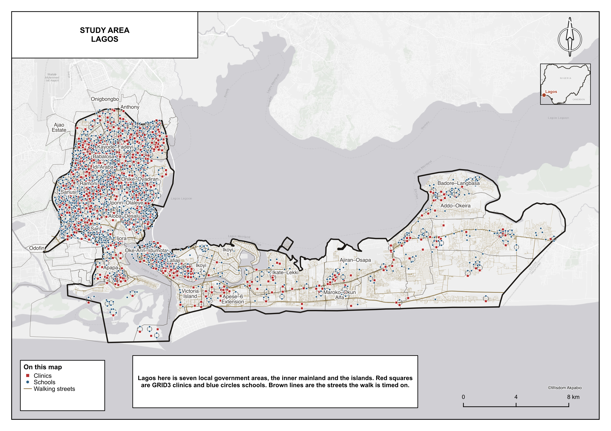
Ibadan
The six outer local government areas around Ibadan add 2,746 km² of mostly thin settlement at about 1,455 people per km². Including them would drown the core in bush. The city used here is the five core areas only (Ibadan North, North East, North West, South East and South West): 126 km², 1.22 million people, 9,659 per km². It is the most compact city in the set, and the one whose street map is closest to complete. The indigenous core, the university north of Sango, and the western fringe toward Eleyele sit inside one small outline. That is why a single poorly served ward can move the city score.
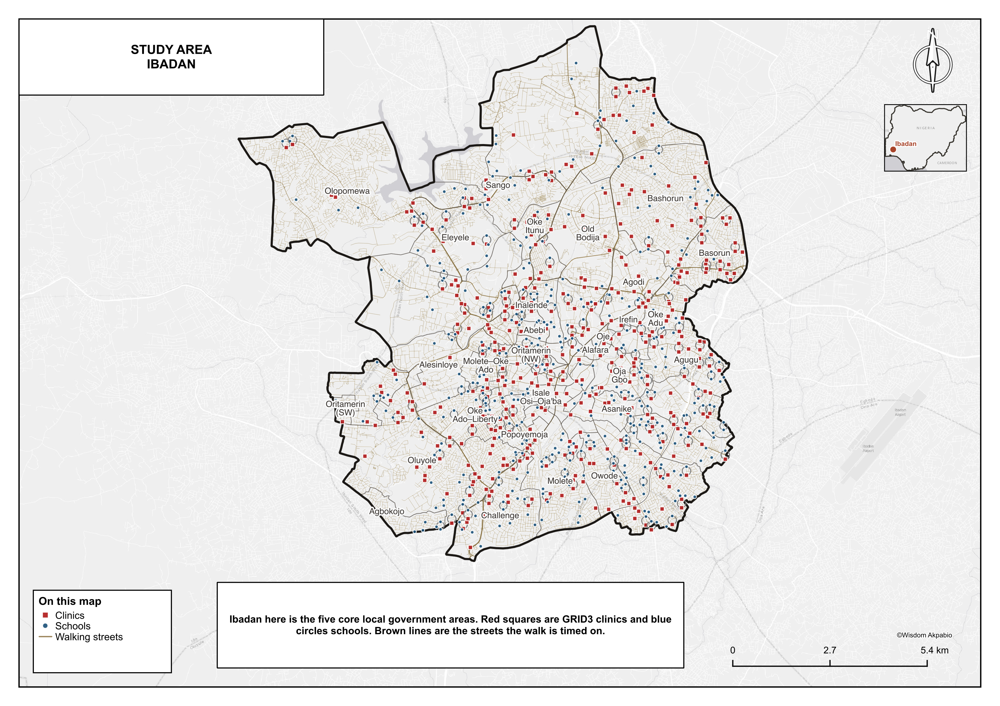
Kano
Ungogo to the north and Kumbotso to the south now hold more people than the walled city and Sabon Gari. A 15-minute score that only looked at Fagge and the Municipal Area would describe a city that no longer exists. The outline is eight metro local government areas (Dala, Fagge, Gwale, Kano Municipal, Kumbotso, Nassarawa, Tarauni, Ungogo): 573 km², 5.78 million people, 10,092 per km², the densest of the five. The plates keep that eight-area metro and label those districts rather than every Unguwar and Tudun.
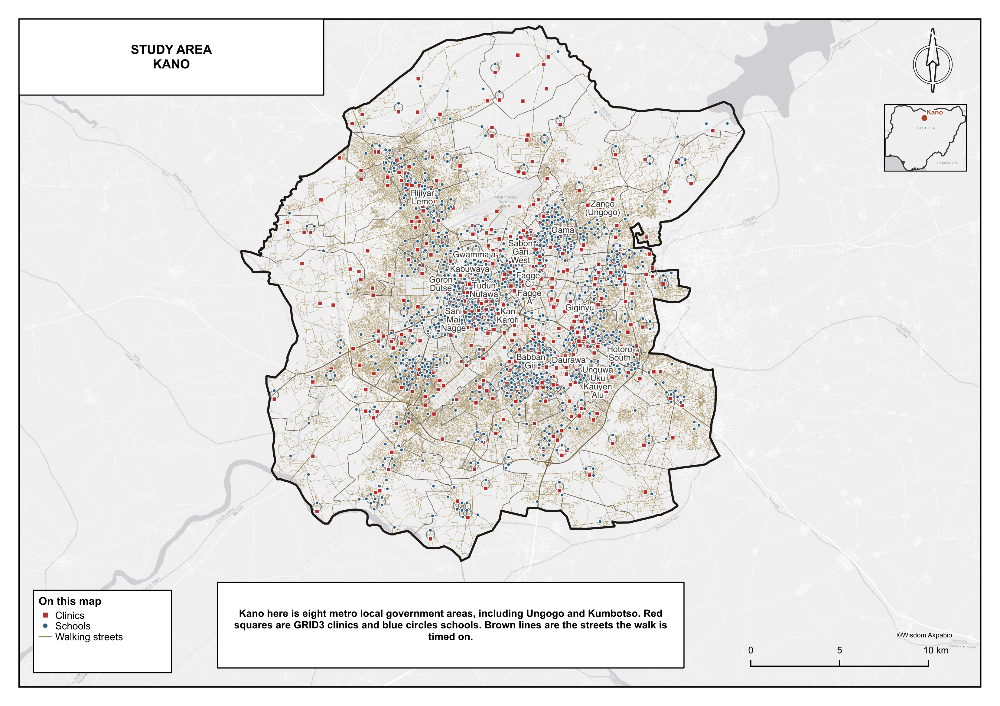
Abuja
The Municipal Area Council is 1,476 km² of capital territory rather than a compact city (Abubakar, 2014; Abubakar and Doan, 2017). This study adds the built-up Bwari satellite of Kubwa, Dutse and Usuma, not the rest of Bwari. The combined outline is 1,658 km² at 1,556 people per km², 2.58 million people. The original districts (Garki, Wuse, Maitama, Asokoro) were drawn for a much smaller population. Gwarinpa and Kabusa, including Lokogoma, still hold most of the AMAC residents. Gui, Orozo, Gwagwa and Jiwa sit on the same AMAC polygon and pull the choropleth toward empty land; they stay in Table 1 and stay off the plate. Figure 1d and the other plates draw ten wards: the seven lived-in AMAC wards plus Kubwa, Dutse and Usuma. The populated north-west corner of that plate is Dakwa and Dei-Dei, named settlements inside Kubwa, not a further slice of Bwari. On that outline 2.02 million people sit at 24.7% inside 15 minutes (Table 1b). Headline scores in Table 1 are the combined outline.
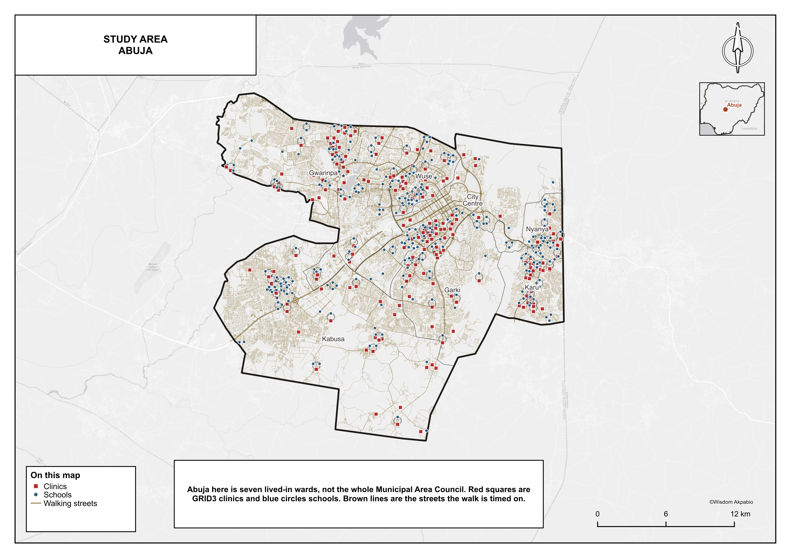
Port Harcourt
Obio/Akpor holds most of the people and most of the gap. Treating the island and township as the city would make a 15-minute capital of an oil city that has already grown past its old edge. Port Harcourt as scored here is two local government areas, Port Harcourt and Obio/Akpor: 336 km², 2.33 million people, 6,946 per km². Rumuoji Eneka, Rumunduru, Alakahia, Mgbu Minkpiti and Woji sit in that second area. Both stay in the metric and on the plate.
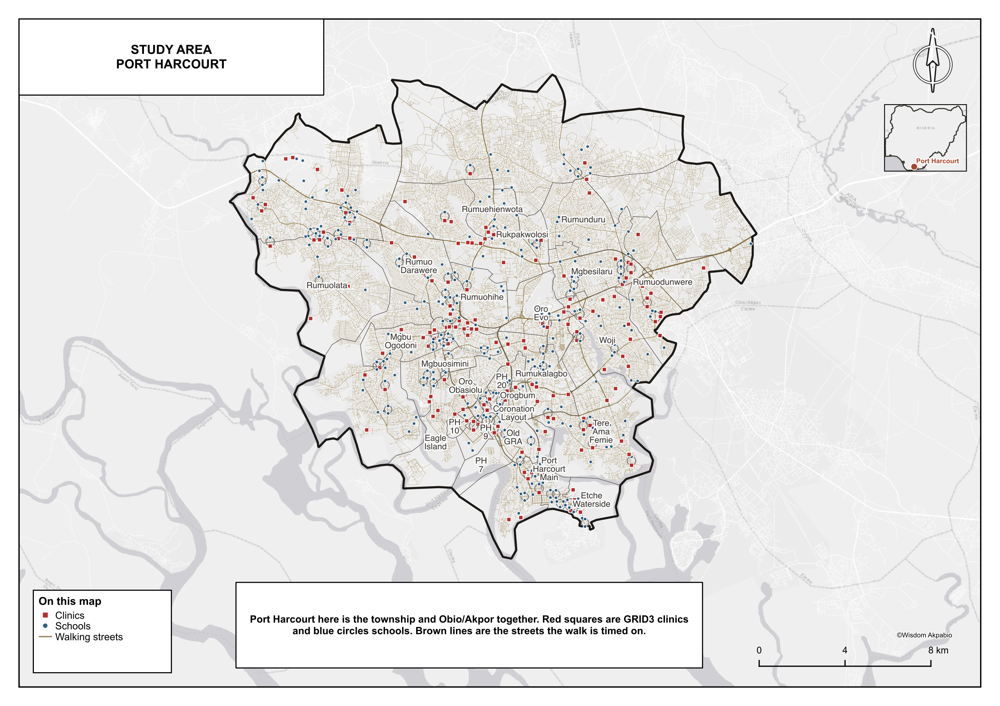
4. Data and methods
City outlines are metro local-government areas from geoBoundaries, dissolved per city. Each outline is filled with hexagons 200 m on a side, matching Bruno et al. (2024). Empty hexagons stay on the map. Deleting them would raise F15 by cutting the uninhabited fringe out of the question. F15 is weighted by people, so empty cells do not punish the score, but they still belong on the plate. Population in each hexagon is summed from GRID3 / WorldPop Nigeria v3.0 (Tatem, 2017; Bondarenko et al., 2020). Clinic points come from GRID3 health facilities v3 in Kano, Ibadan and Abuja, and from health v2 in Lagos and Port Harcourt, where v3 has not been released. School points come from the GRID3 education layer. OpenStreetMap amenity tags are not the inventory: in the same bounding box, OSM holds between 7% and 19% of GRID3 schools.
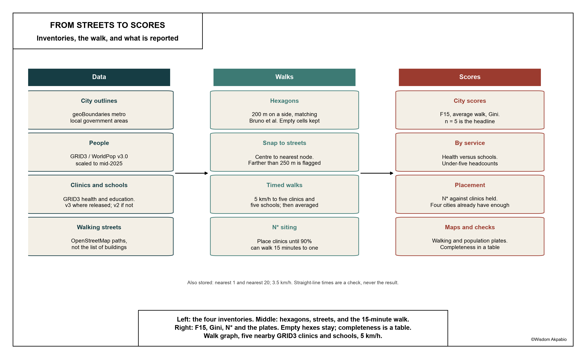
4.1 Walking on mapped streets
Pedestrian streets are downloaded with OSMnx (Boeing, 2017) and cached. Walking speed is 5 km/h, the same convention Bruno et al. use. At that speed a kilometre on a mapped street is scored as 12 minutes. Times at 3.5 and 4.5 km/h are stored as well, because heat, broken paths and flooding make 5 km/h optimistic. Straight-line times are computed as a check and are never used as the result.
Each hexagon is a neighbourhood. People living in it are counted from the population grid. The walk starts at the hexagon’s centre, then joins the nearest mapped street. If that join is longer than 250 m, the hexagon is flagged as off-network: far on the map can mean a missing street as well as a missing clinic. From there the clock follows the shortest path on the street layer to a clinic or a school.
The graph is a line. OpenStreetMap has no sidewalk tag on any walking edge in these five cities, so a 15-minute path here is a carriageway that exists in the extract, not a kerb someone would choose. Dead-ends, at least, can be counted. Section 4.6 is where those streets are named, city by city.
4.2 Dual access, walk time and F15
The 15-minute test here is not whether one clinic sits next door. From each neighbourhood we time the walk to five clinics and average those five times. That is clinic time. We do the same for five schools. That is school time. One mapped point can make a neighbourhood look finished even if the next four are far. Averaging five is a check that the neighbourhood is not relying on a single building. One nearby place is stored as a comparison. Twenty is Bruno et al.’s rule and is stored as a stress test (Table 2). Five is the headline.
If fewer than five clinics (or schools) can be reached, we average those that can. If none can be reached, that service is missing and does not enter the next step.
| Clinic time | = |
walk to 1st + 2nd + 3rd + 4th + 5th nearest clinic
5
|
School time is the same idea, using the five nearest schools.
The neighbourhood’s walk time is then the mean of the two, when both exist. If only clinics or only schools can be reached, that one service is the walk time.
| Walk time of a neighbourhood | = |
clinic time + school time
2
|
(1) |
This is PTk in Table 1. Minutes.
A neighbourhood of 4,000 people has clinic walks of 6, 8, 9, 11 and 16 minutes. Clinic time is (6 + 8 + 9 + 11 + 16) / 5 = 10 minutes. School time is 8 minutes. Walk time is (10 + 8) / 2 = 9 minutes. That neighbourhood is inside 15 minutes, so it counts toward F15.
A second neighbourhood of 80,000 people has a 22-minute walk. It does not count toward F15. Because it holds twenty times as many people, it also pulls the city average up more than the first neighbourhood pulls it down.
The city’s average walk is that neighbourhood walk, counted more heavily where more people live. Ten minutes means a typical person is about a ten-minute walk from that mix of clinics and schools. It is not the nearest building, and it is not a car.
| City walk time | = |
people × their neighbourhood walk time, added up
people with a measured walk
|
(2) |
This is PTcity in Table 1.
F15 is the share of people whose neighbourhood walk is 15 minutes or less. If Lagos is 85%, about 85 in 100 live in a neighbourhood that meets that bar. The other 15 do not.
| F15 | = |
people whose neighbourhood walk is 15 minutes or less
people with a measured walk
|
(3) |
Health-only F15 uses clinic time in place of walk time. School-only F15 uses school time. A city can look close on schools and far on clinics. Averaging the two into walk time hides that split, which is why Table 1 reports both.
Neighbourhoods with no measured walk are left out of the city average, F15 and Gini. Empty hexagons have no people, so they do not move those scores; they stay on the map.
Age–sex grids from WorldPop v3.0 apply a constant share at state level, so they cannot show which neighbourhoods have more young children. The under-five headcount is the city’s health F15 applied to the city’s under-fives. Same rate, a count that can be pictured: about 228,000 under-fives in Port Harcourt live beyond a 15-minute walk of a clinic.
| Under-fives still far | = | city under-fives × (1 − health F15) |
The term in parentheses is the share of people more than 15 minutes from a clinic.
No within-city age map is claimed.
4.3 Gini of walk time
F15 says how many people are inside 15 minutes. Gini says whether those walks are similar or wildly different. Line everyone up from shortest walk to longest. If the line is almost flat, Gini is low: most people wait about the same. If many people are close and a long tail is far, Gini is higher even when F15 looks good. Lagos is the example in Table 1: a working mainland averaged with a long peninsula. Gini does not say where the tail sits. The maps and the ward numbers do.
In words, Gini is the typical difference between two people’s neighbourhood walks, scaled by the city average so that a city of 10-minute walks can be compared with a city of 30-minute walks.
| Gini | = |
typical difference between two people’s walks
2 × city walk time
|
(4) |
Zero would mean everyone has the same walk. One would mean one person holds all of the walking time.
4.4 N*
N* answers a planning question, not a score of what is mapped today. Ignore the clinics that already exist. If new clinics could be placed on the street network, how many would be needed so that 90% of people are within a 15-minute walk of one of them? That count is N*. Ibadan needs 58. Lagos needs 327 because it is large. Abuja’s number is high relative to how many clinics it already has, because the people are spread out.
Two traps follow. N* uses one clinic inside 15 minutes; F15 uses the five-and-five average in (1)–(3). The two percentages are not the same rule. And N* is how many well-placed sites it would take, not how many clinics already stand. Compare it with the mapped stock, and with the share of people who can already walk 15 minutes to one of those clinics (“they cover” in Table 3). If a city already holds more clinics than N* and still leaves many people outside 15 minutes, the stock is in the wrong places. If it holds fewer than N* and still misses 90%, it is short as well as badly placed.
The count is built as follows. Pretend no clinics exist. Place a clinic at the neighbourhood that would put the most still-uncovered people within a 15-minute walk. Mark those people as covered. Repeat. Stop at the first step where 90% of the city is covered. That step is N* (Nemhauser, Wolsey and Fisher, 1978). The greedy count is a slightly high estimate of the smallest possible number.
| Share now covered | = |
people now within 15 minutes of a placed clinic
people in the city
|
(5) |
N* is the first step at which this share reaches 90%.
The same 15-minute, one-clinic rule applied to the clinics that already stand is
| Already covered | = |
people who can walk 15 minutes to one existing clinic
people in the city
|
(6) |
This is “they cover” in Table 3.
Bruno et al. move existing clinics; here the count starts from none. N* ignores land, tenure, flooding and how many patients a clinic can take. N* per 100,000 people is N* divided by population in hundred thousands.
4.5 Completeness of the street map, and the plates
Median snap distance, the share of hexagons and of people off-network, and the OSM-to-GRID3 school ratio are reported with every F15 (Table 4). Abuja is the warning: the typical hexagon centre sits 198 m from a mapped walking street.
Ward outlines on the plates are GRID3 vaccination wards. Names printed on top of them are OpenStreetMap districts (place=suburb, quarter or neighbourhood), plus a few named residential areas OSM never promoted to a suburb (Lokogoma). GRID3 settlement points fill the rare pinned name that OSM lacks (Apo). Helvetica 14 pt, overlapping names omitted. Lagos labels are this class (Ikoyi, Victoria Island, Sangotedo). Lagos’s plate is seven local government areas (Eti-Osa, Lagos Island, Apapa, Lagos Mainland, Surulere, Mushin and Shomolu), not the 16-area metro. Abuja’s plate is ten wards: Gwarinpa, Wuse, Nyanya, Karu, City Centre, Garki and Kabusa, plus Kubwa, Dutse and Usuma in Bwari. Not the rest of AMAC, not the rest of Bwari. Kabusa is what puts Lokogoma inside the drawn city. The village names used in the results (Dakwa, Dei-Dei, Eneka, Ikota) are GRID3 settlement points inside those wards. They locate the hexes in the prose and on the live map. They are not a second label class on the plates.
4.6 Streets people will not walk
The 15-minute score assumes that if a path exists on the street layer, someone will walk it at 5 km/h. In these cities that is often a bad assumption. People skip a scored walk when there is no walkway, when the street does not go through, when the carriageway is fast or flooded, or when a danfo is simply the sane choice in the heat.
OpenStreetMap records a sidewalk on none of the walking edges in any of the five extracts. That does not prove every road is kerbless. It does mean this paper cannot see a walkway, and anyone who has stood on the Lekki–Epe corridor, the airport road into Abuja, or a drainage-lined street in Obio/Akpor knows how much of the scored path is a carriageway with no place for a person. Heat and flooding make 5 km/h optimistic even where a kerb exists. Table 2 already stores the slower speeds.
Layout is the part we can count. About 31% of Port Harcourt’s walk-graph nodes have only one connection, the highest of the five. That is the estate and oil-camp pattern in Obio/Akpor: streets that go in and stop. A clinic twenty minutes away on the graph may be farther in practice if the only way out is back to the same collector. Abuja is similar on the number (27%) for a different reason. Planned districts were never fully linked, so Gwarinpa and Lokogoma sit on coarse loops rather than a grid a person can cut across. Lagos is 26%, and on Eti-Osa a lot of that is gated plots and fast roads. Mushin and Surulere are walkable in the old sense. The peninsula is not. Kano’s older city is the exception (8% dead-ends), which is why Dala and Fagge score well on the clock. That still does not explain Ungogo. People there are far because the clinics stayed in the old city, not because the streets are cul-de-sacs.
Where the walk is hostile, people take a danfo or a Keke. That is ordinary in Port Harcourt and on the Lagos islands. The score does not include those trips, so it both overstates how finished a walking city is and understates how reachable some neighbourhoods already are by road.
Ibadan is compact and the street map is almost complete, so the remaining reason not to walk is the one this paper cannot see: shade, a walkway, standing water after rain on those tight streets, including the ones that already reach a clinic in under 15 minutes. Section 7 keeps each of those limits on the city it belongs to.
5. Results
5.1 Who can walk 15 minutes
The buildings and the streets are in Figure 1. The scores that follow time those streets.
Lagos and Ibadan, both above 8,900 people per km², put 85.4% and 82.1% of residents inside a 15-minute walk. Kano is denser still (10,092 per km²) and reaches only 67.2%. Port Harcourt, at 6,946 per km², reaches 30.7%. Abuja, at 1,556 per km², reaches 21.5%. Average city walk time runs from 10.3 minutes in Lagos to 29.8 minutes in Abuja.
The dashed line in Figure 3 is fitted to the four cities other than Port Harcourt. Compact settlement goes some way toward explaining who can walk 15 minutes. Ibadan holds 364 clinics per million people; Port Harcourt holds 75. Kano holds 80, thin enough, even in the densest of the five, to sit well below the line compactness would have predicted.
| City | Area | Population | Density | Average walk | F15 | Gini | F15, health | F15, schools |
|---|---|---|---|---|---|---|---|---|
| Lagos | 969 km² | 8.69M | 8,965 /km² | 10.3 min | 85.4% | 0.346 | 75.2% | 91.2% |
| Ibadan | 126 km² | 1.22M | 9,659 /km² | 10.9 min | 82.1% | 0.310 | 81.9% | 79.5% |
| Kano | 573 km² | 5.78M | 10,092 /km² | 13.5 min | 67.2% | 0.291 | 55.9% | 74.4% |
| Port Harcourt | 336 km² | 2.33M | 6,946 /km² | 21.2 min | 30.7% | 0.272 | 24.7% | 47.1% |
| Abuja | 1,658 km² | 2.58M | 1,556 /km² | 29.8 min | 21.5% | 0.325 | 17.8% | 31.9% |
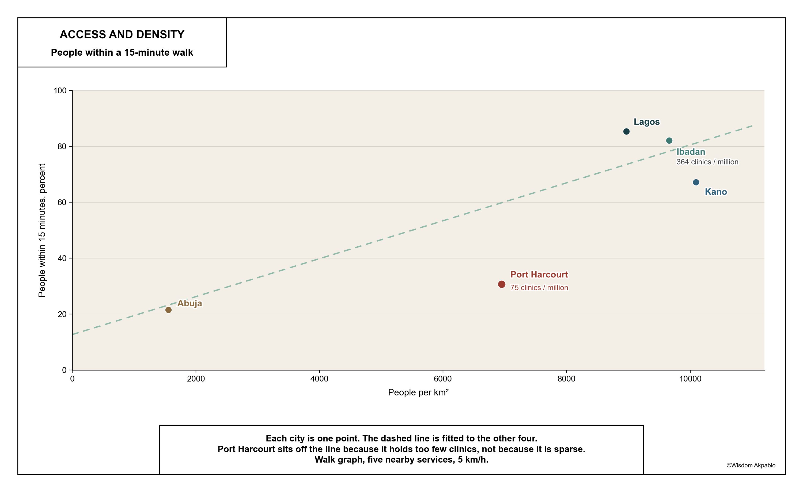
Health is the weaker of the two services in four cities. The gap is 22 points in Port Harcourt (24.7% against 47.1%). Averaging clinics with schools into one walk time hides that. Ibadan is the only city where schools trail clinics, and the only one that holds roughly as many of each (445 clinics, 453 schools). Applying the city-wide health score to each city’s under-five population gives about 1.2 million children under five more than 15 minutes from a clinic: 426,000 in Kano, 313,000 in Abuja, 233,000 in Lagos, 228,000 in Port Harcourt, 31,000 in Ibadan. Those headcounts are the city health score laid onto under-fives.
Gini is highest in Lagos (0.346) and lowest in Port Harcourt (0.272). Bruno et al. (2024) found that cities with worse average access were also more unequal. The pattern here runs the other way. Lagos is close for most people and very far for a few: the peninsula hanging off a working city. Port Harcourt is far for almost everyone, so the low Gini is shared distance rather than shared access.
Figures 4 and 5 put Table 1 on a map. Green on the walking plates is 15 minutes or less. Lagos and Ibadan are green through most neighbourhoods that have people in them; Port Harcourt and Abuja stay yellow and red through most of the lived-in wards. Population plates use a yellow-to-red scale fitted to each city. Walking plates use one six-class minute scale in every city, with 15 minutes and 60 minutes as class edges, so the first three classes add up to F15. Sections 5.1.1–5.1.5 read each plate against the ward numbers. City-wide F15 remains the metro score in Table 1. The Lagos and Abuja plates are tighter cuts of those metros, so they can look harsher than the city-wide figure (Table 1b). The same neighbourhoods can be panned at https://whizialfa.github.io/15-min-cities-nigeria/. Lagos and Abuja on that map follow Table 1b, not Table 1.
| City | Outline | People | Average walk | F15 | Gini |
|---|---|---|---|---|---|
| Lagos | Seven local government areas | 2.33M | 12.6 min | 70.6% | 0.420 |
| Lagos | Nine areas off the plate | 6.26M | 9.1 min | 91.3% | 0.280 |
| Abuja | Ten wards | 2.02M | 26.3 min | 24.7% | 0.294 |
| Abuja | Four AMAC wards off the plate | 490,000 | 38.1 min | 11.4% | 0.314 |
| Abuja | AMAC only | 2.10M | 30.5 min | 17.0% | 0.293 |
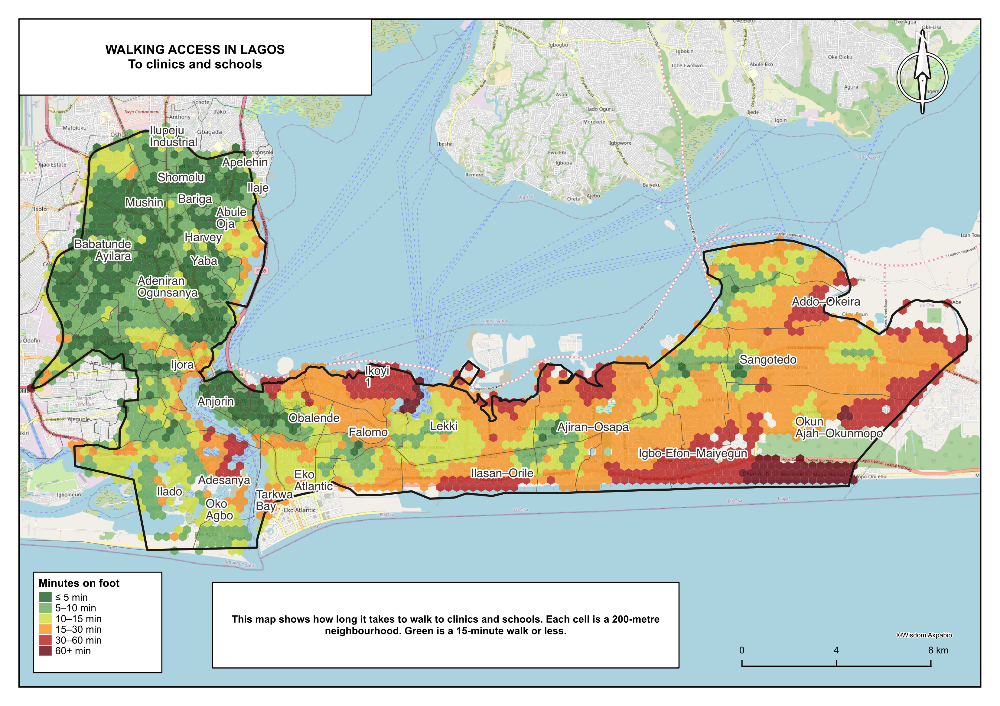
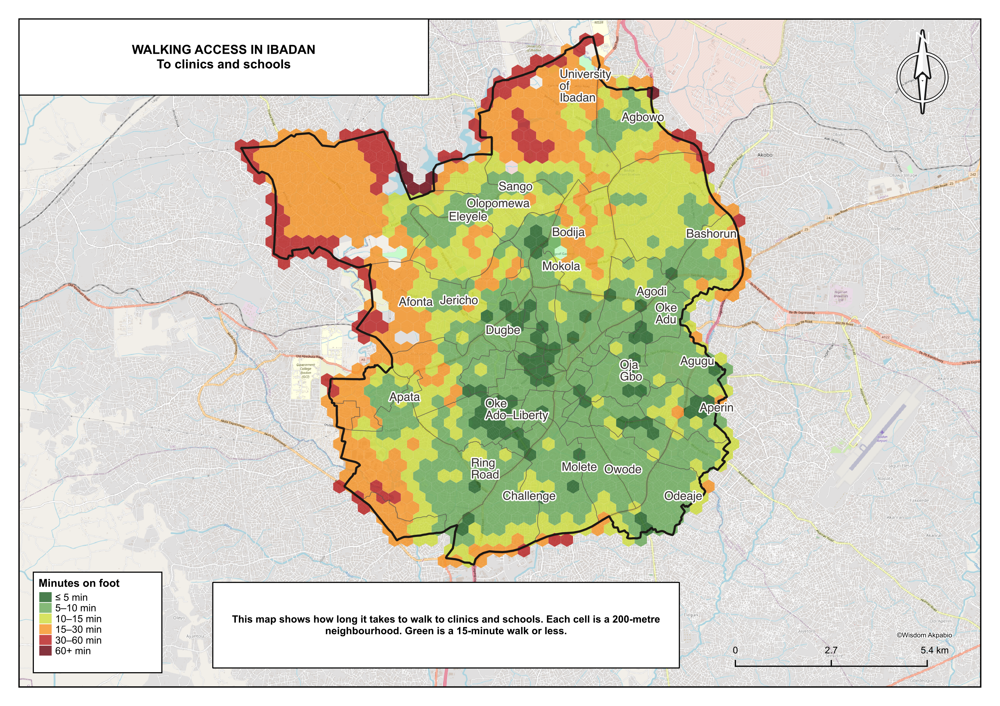
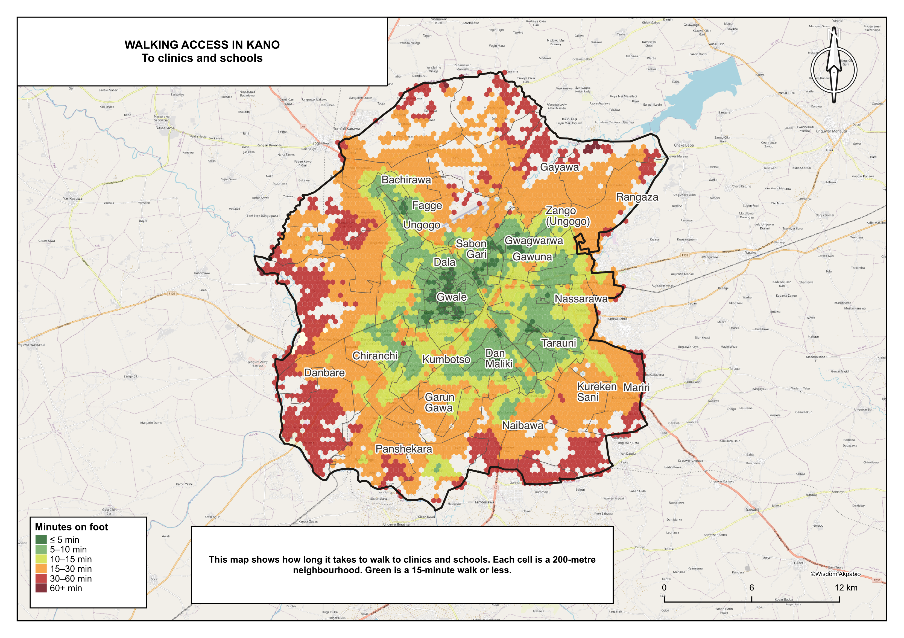
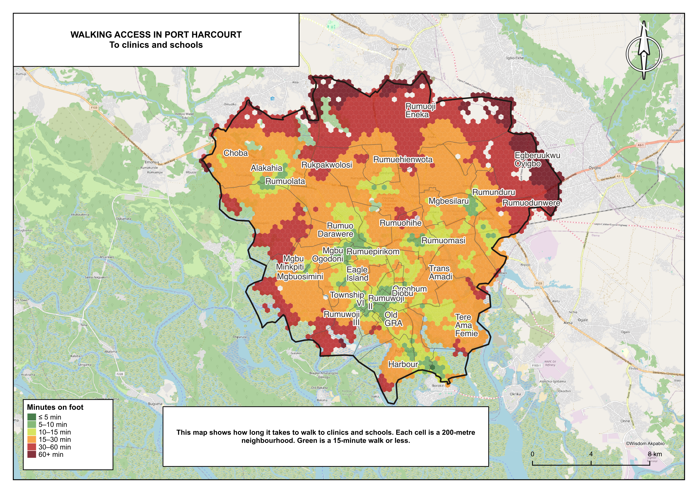
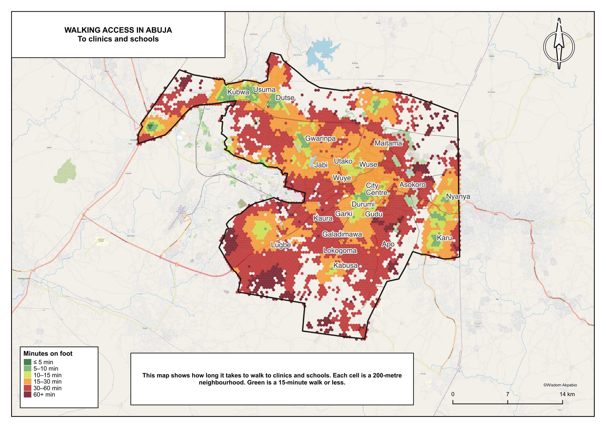
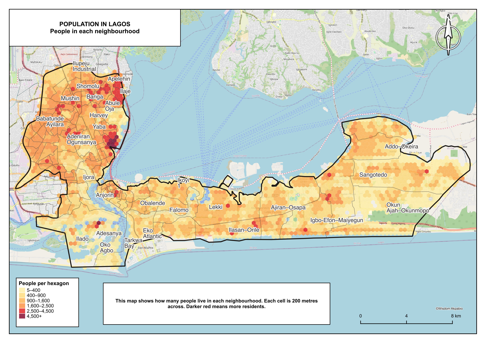
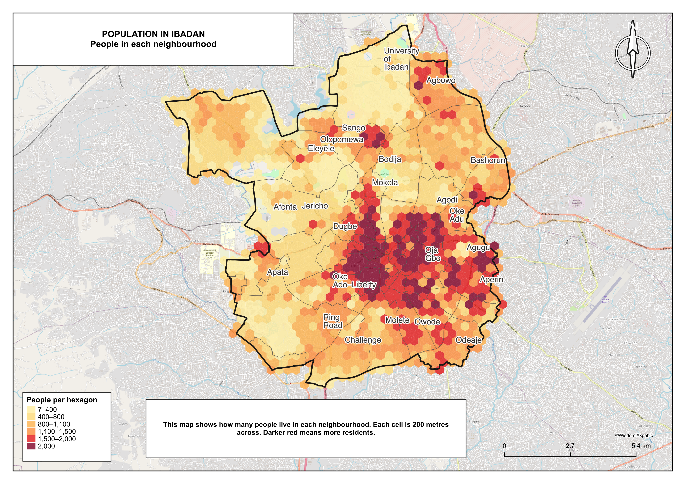
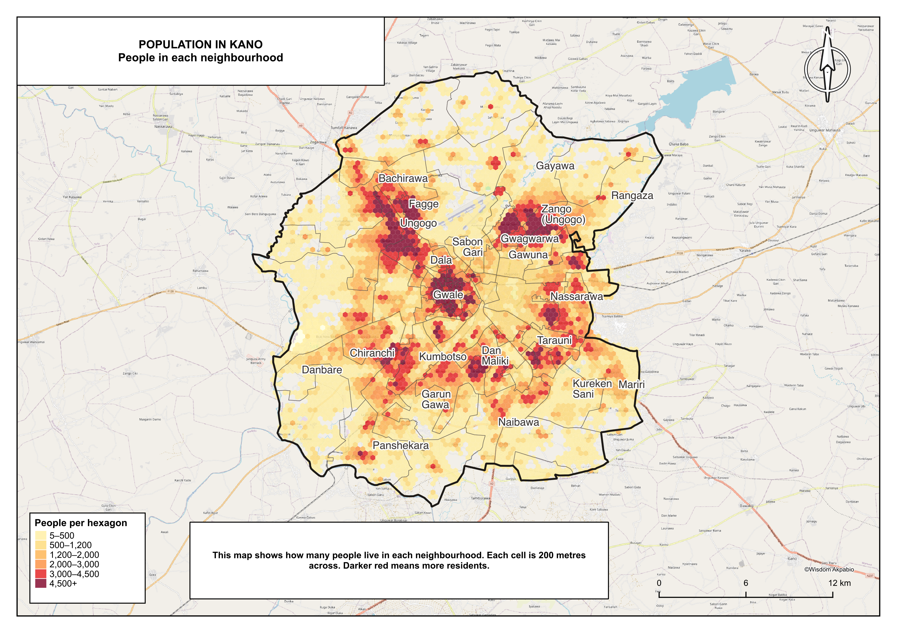
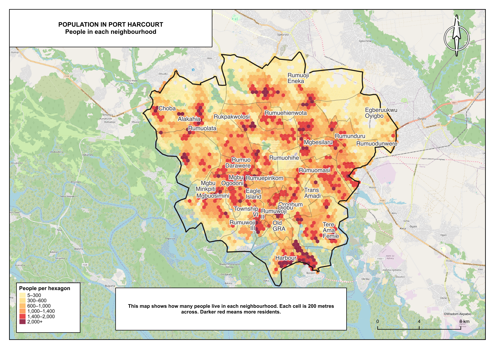
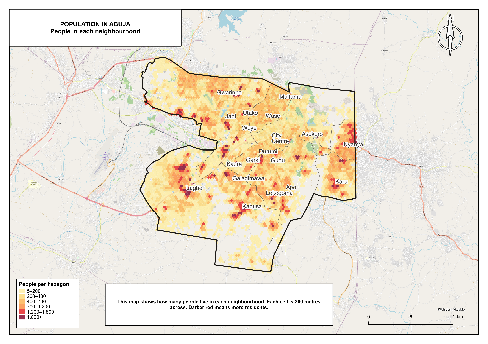
5.1.1 Lagos
The 85.4% is the sixteen local government areas. Nine of them never appear on the walking plate and already sit at 91.3%: 6.26 million people. Alimosho is 2.36 million of those, at 93.3%. Agege, Ajeromi/Ifelodun and Ikeja are at or above 96%. Schools city-wide are 91.2%; health 75.2%. About 233,000 children under five live more than 15 minutes from a clinic. The stock is 2,303 clinics (265 per million) and 5,966 schools. Average walk is 10.3 minutes.
The plate is seven areas: Eti-Osa, Lagos Island, Apapa, Lagos Mainland, Surulere, Mushin and Shomolu. Together they hold 2.33 million people at 70.6% (Table 1b). Almost all of the drop is Eti-Osa (1.10 million, F15 41.8%, mean walk 20 minutes). Lagos Island is 99.6%, Mushin 99.4%, Shomolu 99.4%, Surulere 99.1%, Lagos Mainland 94.0%, Apapa 86.6%. The Gini of 0.346 is this contrast between a working mainland and a long peninsula, which is why Bruno et al.’s pairing of poor access with high inequality does not appear here.
On the plate the inner mainland is green through Mushin, Yaba, Surulere and Apapa. South of the docks, Ilado and Oko Agbo sit on creek islands that the street map treats as land; a walk scored here is often a boat in life. Obalende is at 100%. Victoria Island is 65.1%. Then the corridor fails: Ikoyi 1 (51,000 people, F15 0%, mean walk 34 minutes), including Banana Island and Onikoyi; Falomo–Oyinkan Abayomi (24,000, 1.5%); Okun Ajah–Okunmopo (82,000, 11.6%); Igbo-Efon–Maiyegun (88,000, 15.2%); Sangotedo (153,000, 26.3%), with Olokonla on that same fringe. Ajah is 57.0%, Ikota inside it, and Ikate–Lekki 64.5%, middling rather than a 15-minute coast. Ikosi Isheri in Kosofe, off this plate, has a mean walk of 113 minutes; that is lagoon and a broken street join, which is why 24.8% of Lagos hexes sit off-network while only 2.8% of people do.
327 well-placed clinics would reach 90% under a single-clinic 15-minute walk. Lagos already holds 2,303 and already reaches that 90%. Failures at a choice of five are on the Lekki corridor. Those extra buildings are on the mainland. Adding clinics in Alimosho would treat a well-served area as if it were the gap.
5.1.2 Ibadan
Olopomewa is the hole. It holds 78,000 people, the largest ward in the city, at F15 12.4% and a mean walk of 22 minutes. Ibadan as a whole is 82.1% and 10.9 minutes, on 126 km², with 445 clinics and 453 schools (364 and 371 per million, the richest stock in the set). It is the only city where schools trail health (79.5% against 81.9%). The street map is the cleanest of the five: median snap 47 m, 0.7% of hexes and 0.1% of people off-network. About 31,000 children under five live more than 15 minutes from a clinic.
The rest of the plate is green. Ibadan North East is at 96.7%, South East at 98.1%. Agodi, Agugu and Molete are at 100%. Bashorun (69,000 people) is 96.1%, Challenge 92.3%, Sango 90.0%, Eleyele 91.8%, Ring Road–Challenge–Oluyole 86.0%, Agbowo 80.0%. Apata is the soft western edge at 68.9%. Ibadan North West sits at 55.1% only because of Olopomewa. Samonda (30,000, 39.9%) is the next gap, north of Bodija. Eleyele is next door to Olopomewa and already inside 15 minutes, so the hole is local rather than a missing west.
N* is 58 against 445 clinics held. The existing stock already covers 92.4% of people under a 15-minute walk to one clinic. Closing Olopomewa is the remaining work. Averaging clinics with schools hides almost nothing here, because the two services are close; the map still shows the hole.
5.1.3 Kano
Ungogo holds 1.34 million people at F15 35.1%. Kumbotso holds 1.28 million at 44.5%. Together they are 45% of Kano, which is why a city at 10,092 people per km² only reaches 67.2%. Average walk is 13.5 minutes. There are 465 clinics, 80 per million, a fifth of Ibadan’s rate, and 1,045 schools. Health is 55.9%; schools 74.4%. About 426,000 children under five live more than 15 minutes from a clinic, the largest headcount in the set. Under-fives are 16.7% of residents against 10.8% in Lagos.
The core is still close. Dala is at 100%, Kano Municipal 97.7%, Tarauni 94.6%, Nassarawa 89.4%, Gwale 88.4%, Fagge 80.0%. Sabon Gari West is at 100%; Sabon Gari East is 44.6%, which is why Fagge is not a perfect local government area. Inside Ungogo and Kumbotso the named wards are worse than the local-government means: Ungogo ward, Yada Kunya, Fanisau and Chalawa are at 0%; Gayawa (160,000) is 2.6%; Kureken Sani (77,000) is 4.7%. Kumbotso’s health-only F15 is 27.1%; schools are carrying a clinic gap.
N* is 119 against 465 held. The existing stock already covers 89.2% under a single-clinic rule. The unused clinics sit in Dala, Fagge and the Municipal Area. Dorayi in Gwale holds 363,000 people at 83.6% and is the crowded belt on the population plate. Ungogo and Kumbotso are where the later population went. Only 0.9% of people sit off-network.
5.1.4 Port Harcourt
Obio/Akpor holds 1.74 million people at F15 23.8%. The Port Harcourt local government area holds 550,000 people at 53.8%. City-wide F15 is 30.7% because of the first of those two numbers, not the township. Average walk is 21.2 minutes on 175 clinics (75 per million) and 326 schools. The health–school gap is 22 points (24.7% against 47.1%), the widest of the five. About 228,000 children under five live more than 15 minutes from a clinic, almost as many as in Lagos, from a city a quarter of the size.
On the plate the township is still green: Orogbum at 100%, Township VI, Rumuwoji II and Rumuwoji III at 100%, Old GRA at 67.9%, Diobu and Trans Amadi in the same cluster. Eagle Island is already only 42.1%. North and west of that, Obio/Akpor fails in the places that now hold the city: Rumuoji Eneka (203,000 people, F15 0%, mean walk 36 minutes), the named settlements Eneka and Rumuogonoma inside it; Rumunduru (108,000, 0.6%), including Elimgbu; Mgbu Minkpiti (149,000, 10.7%); Rukpakwolosi (142,000, 14.9%); Rumuolata (132,000, 16.1%); Woji (138,000, 25.0%), with Oginigba; Alakahia (172,000, 30.3%), with Ozuoba. Choba sits on the western edge of that same belt. Egberuukwu Oyigbo, on the eastern edge, is 66,000 people at 0% with a mean walk of 52 minutes.
N* is 115 well-placed clinics for a 90% single-clinic walk. The city already holds 175 and reaches only 66.1% with them. There are more buildings than an optimal layout needs, and still too few of them in Obio/Akpor. Median snap is 56 m and 0.5% of people sit off-network, so the street map is not carrying the result. A 15-minute reading of Port Harcourt that stops at Old GRA describes a city most residents have already left. Danfo and shared taxis would change this city more than Ibadan; they are omitted from the walk time.
5.1.5 Abuja
Median snap to a walking street is 198 m, still the longest of the five, though it now sits under the 250 m warning. 45.2% of hexes, holding 3.1% of people, sit off-network: the empty AMAC land is still on the grid, but Kubwa’s streets pulled the typical neighbourhood closer to a mapped path. F15 is 21.5% and the average walk 29.8 minutes, on 1,658 km² at 1,556 people per km², with 307 clinics (119 per million) and 582 schools. Health is 17.8%, schools 31.9%. About 313,000 children under five live more than 15 minutes from a clinic. AMAC on its own is 17.0%. The 21.5% is the combined outline, and Table 4 still has to sit next to it.
The plate is ten wards, 2.02 million people, F15 24.7% (Table 1b). The four omitted AMAC wards (Gui, Orozo, Gwagwa, Jiwa) hold 490,000 people at 11.4%; dropping them does not rescue the city. The satellite does more of the lifting than those four: Usuma is 79.6% (53,000 people, mean walk 11 minutes), Kubwa 53.6% (126,000, 17 minutes), Dutse 37.6% (233,000, 22 minutes). The populated north-west of Kubwa is Dakwa and Dei-Dei, with Kagini and Jibi on the same lobe; that is the unnamed mark on Figure 1d, not extra Bwari. Dutse Alhaji and Mpape sit in Dutse. Among the AMAC wards on the plate, Karu is still the closest (59.9%, 16 minutes), with Nyanya next at 34.9%. Wuse is 22.7%, City Centre 18.5%. The two wards that now hold most of the capital are not close: Kabusa (453,000, including Lokogoma, Apo, Galadimawa and Lugbe) is 13.5%; Gwarinpa (430,000, including Life Camp and Karsana) is 11.5%. Garki, still read as the planned core, is 11.9% with a mean walk of 34 minutes. Gui, off the plate, is 132,000 people at 0% and 60 minutes. Dakwa Village in Jiwa is on the study outline and off the plate.
N* is 345 against 307 clinics held, the only city where the well-placed count exceeds the stock, at 13.4 clinics per 100,000 people, nearly three times Ibadan or Port Harcourt. Existing clinics cover 55.0% of people under a single-clinic 15-minute walk. Moving what sits in Karu or Kubwa will not serve Gwarinpa and Kabusa. New sites are required, and some of those missing sites in Gui are missing streets. Empty hexes do not pull F15 down, since F15 is weighted by people; Gwarinpa and Kabusa pull it down because people live there.
5.2 How many nearby places, and how fast people walk
Nearest clinic and school, on the walking network, is already 92–95% in Lagos, Ibadan and Kano, and 57.6% in Abuja (Figure 6, Table 2). Five nearby places is the headline. Twenty, the original paper’s rule, leaves Port Harcourt at 1.1% and Abuja at 0.1%. Requiring twenty substitutes was written for a dense, well-tagged list of amenities (Logan et al., 2022). Copied onto GRID3 clinics it would describe that rule, not a 15-minute walk to a nurse.
| City | Nearest 1 | Nearest 5 (headline) | Nearest 20 (Bruno et al., 2024) |
|---|---|---|---|
| Lagos | 94.9% | 85.4% | 49.1% |
| Ibadan | 93.9% | 82.1% | 43.6% |
| Kano | 92.0% | 67.2% | 20.7% |
| Port Harcourt | 74.4% | 30.7% | 1.1% |
| Abuja | 57.6% | 21.5% | 0.1% |
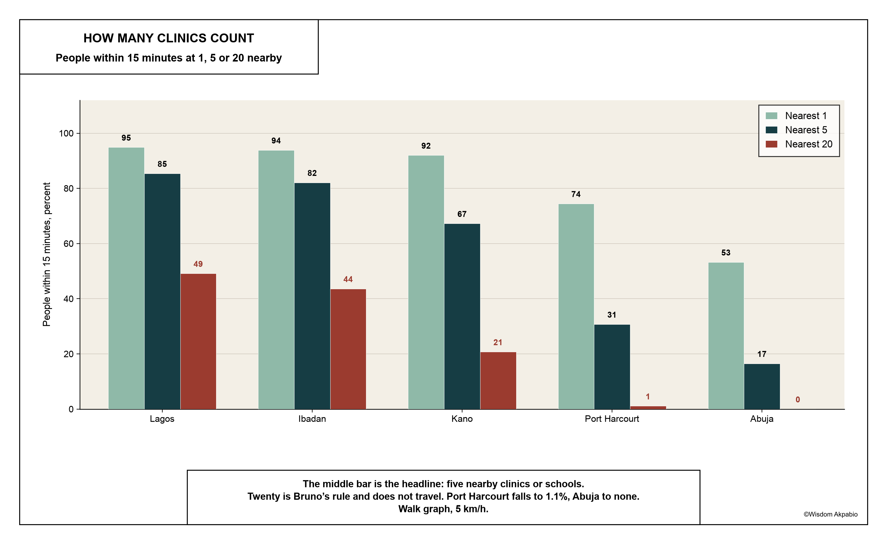
Five kilometres an hour is optimistic. At 3.5 km/h, with five nearby places, F15 falls to 68.7% in Lagos, 62.3% in Ibadan, 43.0% in Kano, 9.4% in Port Harcourt and 8.7% in Abuja. Treat 3.5–4.5 km/h as the lower band; quote the speed with F15.
Straight-line walks overstate F15 everywhere, and most where the street map is most broken: Lagos 95.5% to 85.4%, Ibadan 92.8% to 82.1%, Kano 82.2% to 67.2%, Port Harcourt 68.5% to 30.7%, Abuja 47.1% to 21.5%.
5.3 Placement versus shortage
Ibadan and Port Harcourt need almost the same number of well-placed clinics per 100,000 people (4.7 and 4.9; Figure 7, Table 3). The resemblance stops there. Port Harcourt already holds 175 and reaches 66.1% of residents with a 15-minute walk to one clinic; 115 well-placed clinics would reach 90%. That unused margin sits in Port Harcourt (Orogbum, Etche Waterside) while Rumuoji Eneka and Egberuukwu Oyigbo remain uncovered. Lagos uses 2,303 clinics to reach the 90% that 327 well-placed ones would deliver, and still leaves Ikoyi 1 and Sangotedo outside a 15-minute set of five. Kano is already close (89.2% with 465), yet Ungogo and Chalawa are at zero because the stock sits in Fagge and the Municipal Area, not on the fringe. Abuja is the only city where N* is larger than the stock (345 against 307), at 13.4 clinics per 100,000 people, because population is spread over 1,658 km² and Gui, Gwarinpa and Kabusa are far from what exists.
| City | N* | Per 100k | Clinics held | They cover | N* / held |
|---|---|---|---|---|---|
| Ibadan | 58 | 4.7 | 445 | 92.4% | 0.13 |
| Port Harcourt | 115 | 4.9 | 175 | 66.1% | 0.66 |
| Kano | 119 | 2.1 | 465 | 89.2% | 0.26 |
| Abuja | 345 | 13.4 | 307 | 55.0% | 1.12 |
| Lagos | 327 | 3.8 | 2,303 | 90.0% | 0.14 |
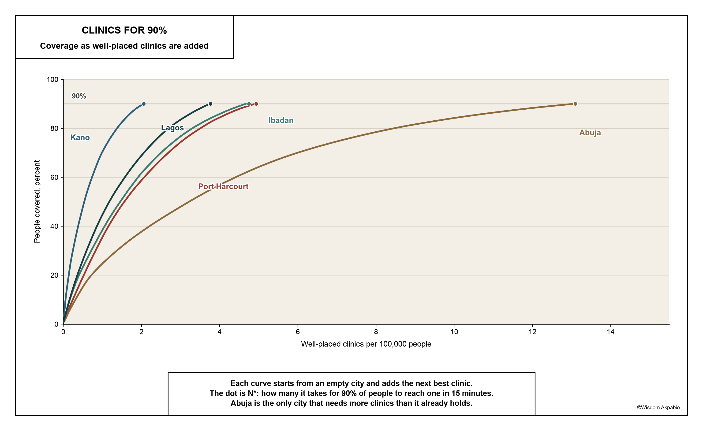
Four cities already hold more clinics than the N* layout needs. The remaining long walks in Olopomewa, Ungogo, Rumuoji Eneka and Ikoyi 1 are therefore first a question of where those clinics sit. Abuja is the exception, and Table 4 has to be read with it.
5.4 Completeness of the street map
Table 4 belongs next to every F15. Median distance from a hexagon centre to a walking street is 47 m in Ibadan and 198 m in Abuja. Abuja is still the farthest typical neighbourhood, but it no longer fails 250 m on the median: 45.2% of its hexagons and 3.1% of its people sit off the mapped network. The 21.5% F15 is therefore still part sprawl and part missing streets, and that mix is visible in Gui and Jiwa. Adding Kubwa pulled the median down because those streets are mapped; the empty AMAC hexes are still on the grid. Lagos looks poorly mapped by hexagon share (24.8%), but those hexagons are lagoon and empty land and hold 2.8% of people, the same fringe that contains Ikosi Isheri. OSM school counts stay under a fifth of GRID3 in every city. The plates do not shade the off-network cells. That record sits in this table, not on the colour ramp.
| City | Median snap | Hexes off-network | People off-network | OSM / GRID3 schools |
|---|---|---|---|---|
| Ibadan | 47 m | 0.7% | 0.1% | 0.066 |
| Port Harcourt | 56 m | 13.3% | 0.5% | 0.173 |
| Lagos | 67 m | 24.8% | 2.8% | 0.079 |
| Kano | 71 m | 18.6% | 0.9% | 0.193 |
| Abuja | 198 m | 45.2% | 3.1% | 0.119 |
6. Discussion
If compactness were enough, Kano would sit with Lagos and Ibadan, and Port Harcourt would sit nearer both of them than to Abuja. Table 1 and the plates disagree. A short scored walk can still be a street people will not take. Section 4.6 is where those streets are named.
The densest city in the set, Kano, reaches only 67.2%. It holds 80 clinics per million against Ibadan’s 364, and those clinics are still in Dala, the Municipal Area, Tarauni and Nassarawa, which already walk 15 minutes. Ungogo and Kumbotso, north and south of that older city, hold 2.62 million people at 35.1% and 44.5%. Gayawa, in Ungogo, is 160,000 people at 2.6%. Health F15 is 55.9%, schools 74.4%, and in Kumbotso the health-only score falls to 27.1%. About 426,000 children under five live more than 15 minutes from a clinic, the largest such headcount. Off-network population is 0.9%. Something similar, and worse, happens in Port Harcourt, except density cannot be blamed: 6,946 people per km² is a crowded city. It holds 75 clinics per million, and those clinics remain in the Port Harcourt local government area while Obio/Akpor, about three-quarters of the residents, sits at 23.8%. Rumuoji Eneka is 203,000 people at 0%; Eneka and Rumuogonoma sit in that ward. Old GRA, Orogbum, Township VI and Rumuwoji remain walkable, but the people are no longer concentrated there. The health–school gap of 22 points (24.7% against 47.1%) is the widest of the five, so school access and clinic access part company in the same neighbourhood. Shared taxis would rearrange Port Harcourt more than they would Ibadan. They are omitted, which means the walking score understates how reachable Obio/Akpor might be by road and overstates how finished a walking city it is.
Lagos city-wide F15 of 85.4% is the sixteen local government areas. Nine of them, 6.26 million people, already sit at 91.3%. Alimosho alone is 2.36 million at 93.3%. None of that mainland appears on the plate, which is seven areas at 70.6%. Almost the whole drop is Eti-Osa: Ikoyi 1 at 0% (Banana Island, Onikoyi), Falomo at 1.5%, Sangotedo at 26.3% (Olokonla). Bruno et al. (2024) found that cities with worse access were also more unequal. Lagos has the highest Gini in this set (0.346) and one of the best F15 scores, because a working mainland and a long peninsula have been averaged. Port Harcourt has the lowest Gini (0.272) because the long walk is ordinary. A Gini on walk times will look like equity whenever most of the mass sits beyond 15 minutes.
Ibadan is small enough that one ward can still move the city. 126 km², median snap 47 m, 445 clinics and 453 schools, F15 82.1%: this is closer to the compact, well-stocked place the fifteen-minute literature was written for. Olopomewa has 78,000 people at 12.4%. Eleyele, immediately west, is 91.8%. There is not much left to explain in the 18 points below 100%. The six outer local government areas are omitted because spreading the outline would hide that ward in thin settlement.
N* turns those maps into a count. Lagos already holds 2,303 clinics and already covers 90% of people under a single-clinic 15-minute walk; 327 well-placed sites would have done the same job. The surplus is on the mainland, so another clinic in Alimosho does not shorten Ikoyi, Banana Island or Sangotedo. Ibadan holds 445 against an N* of 58. Kano holds 465 against 119, with the unused stock in Fagge and Dala. Port Harcourt is tighter: 175 held, N* 115, existing coverage only 66.1%. Orogbum looks over-provided; Eneka and Elimgbu do not. Abuja is the only city where N* exceeds the stock, 345 against 307, at 13.4 per 100,000 people. Gwarinpa and Kabusa hold 883,000 people between them at 11 to 14%. Karu is 59.9%. Kubwa is 53.6%, and that score includes Dakwa and Dei-Dei. Garki, still spoken of as the planned core, is 11.9% with a 34-minute mean walk. Clinics that serve Karu or Kubwa do not serve Life Camp or Galadimawa.
Abuja’s 21.5% also has to be read against Table 4. Median snap is 198 m, still the longest of the five, and 45.2% of hexes (3.1% of people) sit more than 250 m from a mapped walking street. Gui is 132,000 people at 0% and 60 minutes. Distance and an unfinished map occupy the same cells. Drop Gui, Orozo, Gwagwa and Jiwa and the ten-ward plate only rises to 24.7%, so the lived-in capital is not being failed by Gui alone. Dakwa and Dei-Dei, on the Kubwa lobe, already sit on that tighter map.
Bruno et al. (2024) required twenty nearby places. At that n, Port Harcourt is 1.1% and Abuja is 0.1% (Table 2). Logan et al. (2022) and Guzman, Oviedo and Cantillo-Garcia (2024) have already shown that minute-city rules written for dense, substitutable amenities copy badly. Five nearby GRID3 clinics and schools still separate Lagos (85.4%) from Port Harcourt (30.7%). At n = 20 both of the poorly stocked cities collapse to the floor of Table 2.
The 1.2 million under-fives are the city-wide health F15 applied to each city’s under-five population. Without DHS clusters or a ward census there is no map of which streets hold more young children. What can be said without that map is which service is weak, and where: Kano, then Abuja, Lagos, Port Harcourt, then Ibadan a long way behind.
7. Limitations
The clock runs at 5 km/h on a mapped carriageway. It does not know if there is a walkway, if the street floods, or if anyone would walk it. OpenStreetMap has no sidewalk tag on these edges, so pavement is unobserved. Danfo, Keke and shared taxis are how many of the longer trips actually happen, especially in Port Harcourt and on the Lagos islands; they are omitted. Quality, staffing, opening hours and fees at the buildings are unobserved (Neutens, 2015). GRID3 health is an operational list and incomplete (CIESIN, 2026). N* is a greedy approximation, so it is an upper bound on the smallest covering set (Nemhauser, Wolsey and Fisher, 1978). Clinics are not moved, which is why Bruno et al.’s redistribution maps cannot be repeated. Markets, worship and water were tested and left out of the walk time.
None of that lands the same way in each city.
Lagos’s 85.4% is the sixteen local government areas. Alimosho and the inner mainland carry it. Figure 1a is seven areas at 70.6%, and Eti-Osa is almost the whole drop: Ikoyi 1 at 0% (Banana Island, Onikoyi), Falomo at 1.5%, Sangotedo at 26.3% (Olokonla). About 26% of walk-graph nodes there are dead-ends. The Lekki–Epe corridor is fast roads and gated plots, not Mushin’s tight streets, and the score cannot tell a kerb from a drainage ditch on that peninsula. It only has the line.
Ibadan is the other way round. Median snap is 47 m and 0.7% of hexagons sit off the network, so Olopomewa’s 12.4% is not a missing map. Eleyele, next door, is 91.8%. The 18 points the city sits below 100% are mostly that one western ward. What is still missing is whether those tight streets have shade, a walkway, or standing water after rain. Compactness here is real. Comfort is not measured.
Kano’s older streets are through-connected (about 8% dead-ends) and already inside 15 minutes. Ungogo and Kumbotso are not. Gayawa, in Ungogo, is 160,000 people at 2.6%. The limitation is not completeness: only 0.9% of people sit off-network. It is that 80 clinics per million, still in Dala, Fagge and the Municipal Area, cannot cover 2.62 million people who now live on the later northern and southern streets. A 15-minute reading of the walled city does not describe Kano.
Port Harcourt is crowded (6,946 people per km²) and still at 30.7%. Off-network hexagons are 13.3% of the grid but 0.5% of people, so the miss is not an empty extract. About 31% of walk-graph nodes are dead-ends, the highest of the five, which matches the estate and oil-camp layouts in Obio/Akpor. Rumuoji Eneka is 203,000 people at 0%; Eneka itself sits in that ward. Old GRA, Orogbum and Township VI remain walkable and thinly occupied relative to where people now live. Shared taxis already do the trip the walk score calls far. Leaving them out makes Obio/Akpor look more cut off than a working day is, and makes the township look more like a finished walking city than it is.
Abuja fails on both stock and streets. Median snap is 198 m, still the longest of the five. 45.2% of hexagons and 3.1% of people sit off the mapped network. Gui is 132,000 people at 0% and 60 minutes, but dropping Gui, Orozo, Gwagwa and Jiwa only lifts the ten-ward cut to 24.7%. Gwarinpa and Kabusa, including Lokogoma, Galadimawa and Life Camp, hold most of the AMAC people and sit at 11 to 14%. Karu is 59.9%. Kubwa is 53.6%, and Dakwa and Dei-Dei sit in that ward, not outside it. Garki, still named as the planned core, is 11.9% with a 34-minute mean walk. About 27% of nodes are dead-ends. Missing links between districts, an unfinished OSM graph, and 307 clinics where N* wants 345 sit in the same figure. The 21.5% headline is not sprawl by itself.
Most unnamed Rivers wards keep an official number. Three in the Port Harcourt local government area are given their INEC names: Township VI, Rumuwoji II and Rumuwoji III.
8. Policy recommendations
Four of the five cities already hold more clinics than an optimal 15-minute layout would need (Table 3). Putting the next building where F15 is already high does not move the people who are far.
Lagos does not need another clinic in Alimosho to chase 85.4%. Alimosho is 2.36 million people at 93.3%. The map that is drawn, and the people on it who wait, are on Eti-Osa. Ikoyi 1 (Banana Island, Onikoyi), Falomo and Sangotedo (Olokonla) are the siting problem. Through-streets a person can walk on that peninsula are part of the same problem. A new mainland site will not shorten those walks.
Ibadan already holds 445 clinics against an N* of 58. The leftover gap is Olopomewa: 78,000 people, 12.4%, with Eleyele at 91.8% on the other side of the same western edge. That is a ward to fill or to connect, not a city-wide shortage.
Kano’s unused stock sits in Fagge and Dala. Ungogo and Kumbotso, 2.62 million people, are the backlog, and Gayawa is the clearest miss. Clinics that serve the Municipal Area will not reach those northern and southern streets unless they are built there, on streets that go through.
Port Harcourt’s township is already close. Obio/Akpor is not, and that is where most residents live. Rumuoji Eneka at 0%, including Eneka and Rumuogonoma, is the siting miss. Counting clinics in Orogbum will not turn cul-de-sac estates into 15-minute neighbourhoods. The next buildings belong in Obio/Akpor, and the through-streets and walkways there belong in the same plan. Shared taxis already cover some of the distance the walk score records. A walking programme that ignores them will pour concrete nobody uses and still leave the clinics on the wrong side of the city.
Abuja is the exception on stock: N* is 345 against 307 held. Gwarinpa and Kabusa, including Life Camp, Galadimawa and Lugbe, need the buildings. Karu and Kubwa are closer than either; Dakwa and Dei-Dei already sit in Kubwa. Filling Gui will not fix Gwarinpa, and Garki’s 34-minute mean walk shows that the planned core is not the spare capacity it is assumed to be. Completing the street map, including the missing links between districts, is part of access here. The 21.5% figure in Table 1 should be read with Table 4.
None of these cities has a walkway inventory. Distance on a carriageway is not the same as a street people will walk in the heat. Sidewalks, shade and flooding are the next thing to measure.
9. Conclusions
Compact settlement still sorts most of Table 1. It does not sort Kano, which is dense and short of clinics on the fringe, and it does not sort Port Harcourt, which is crowded, short of clinics, and grown into Obio/Akpor. Lagos’s 85.4% is Alimosho and the inner mainland carrying Eti-Osa. Ibadan’s 82.1% is a compact stock with a hole in Olopomewa. Abuja’s 21.5% is sprawl, a short clinic list, and an unfinished street map in the same figure. N* says Lagos, Ibadan, Kano and Port Harcourt already hold more clinics than a well-placed 15-minute layout would need; Abuja holds fewer. The twenty-place rule belongs in Table 2. The headline is five nearby GRID3 clinics and schools, read with Table 4.
Data availability
Live map: https://whizialfa.github.io/15-min-cities-nigeria/. City tables: data/processed/city_metrics.csv, plate_metrics.csv, nstar.csv, completeness.csv, robustness.csv, ward_f15_summary.csv, walk_network_stats.csv, settlements.csv. Maps: maps/{city}_study_area.png, maps/{city}_PT_k_plate.png and {city}_pop_plate.png. Charts: charts/pipeline.png, charts/f15_vs_density.png, charts/f15_by_n.png, charts/nstar_curves.png. Summary: notes/brief.md and notes/fifteen_minutes_on_foot.pdf. GRID3, WorldPop, geoBoundaries and OpenStreetMap keep their original licences. Quote F15 only from walking, five nearby places.
References
Abubakar, I.R., 2014. Abuja city profile. Cities 41, 81–91. https://doi.org/10.1016/j.cities.2014.05.008
Abubakar, I.R., Doan, P.L., 2017. Building new capital cities in Africa: lessons for new satellite towns in developing countries. African Studies 76, 546–565. https://doi.org/10.1080/00020184.2017.1376850
Aliyu, A.A., Amadu, L., 2017. Urbanization, cities, and health: the challenges to Nigeria — a review. Annals of African Medicine 16, 149–158. https://doi.org/10.4103/aam.aam_1_17
Allam, Z., Nieuwenhuijsen, M., Chabaud, D., Moreno, C., 2022. The 15-minute city offers a new framework for sustainability, liveability, and health. The Lancet Planetary Health 6, e181–e183. https://doi.org/10.1016/S2542-5196(22)00014-6
Apparicio, P., Abdelmajid, M., Riva, M., Shearmur, R., 2008. Comparing alternative approaches to measuring the geographical accessibility of urban health services: distance types and aggregation-error issues. International Journal of Health Geographics 7, 7. https://doi.org/10.1186/1476-072X-7-7
Barrington-Leigh, C., Millard-Ball, A., 2017. The world’s user-generated road map is more than 80% complete. PLOS ONE 12, e0180698. https://doi.org/10.1371/journal.pone.0180698
Boeing, G., 2017. OSMnx: new methods for acquiring, constructing, analyzing, and visualizing complex street networks. Computers, Environment and Urban Systems 65, 126–139. https://doi.org/10.1016/j.compenvurbsys.2017.05.004
Bondarenko, M., Kerr, D., Sorichetta, A., Tatem, A.J., 2020. Census/projection-disaggregated gridded population datasets for 189 countries in 2020 using Built-Settlement Growth Model (BSGM) outputs. WorldPop, University of Southampton. https://doi.org/10.5258/SOTON/WP00670
Bruno, M., Melo, H.P.M., Campanelli, B., Loreto, V., 2024. A universal framework for inclusive 15-minute cities. Nature Cities 1, 633–641. https://doi.org/10.1038/s44284-024-00119-4
Calafiore, A., Dunning, R., Nurse, A., Singleton, A., 2022. The 20-minute city: an equity analysis of Liverpool City Region. Transportation Research Part D 102, 103111. https://doi.org/10.1016/j.trd.2021.103111
CIESIN, Columbia University, 2026. GRID3 NGA — Health Facilities v3.0. New York: Columbia University.
Ferrer-Ortiz, C., Marquet, O., Mojica, L., Vich, G., 2022. Barcelona under the 15-minute city lens: mapping the accessibility and proximity potential based on pedestrian travel times. Smart Cities 5, 146–161. https://doi.org/10.3390/smartcities5010010
Florczyk, A.J., Corbane, C., Schiavina, M., Pesaresi, M., Maffenini, L., Melchiorri, M., Politis, P., Sabo, F., Freire, S., Ehrlich, D., Kemper, T., Tommasi, P., Airaghi, D., Zanchetta, L., 2019. GHSL Data Package 2019. Luxembourg: Publications Office of the European Union. https://doi.org/10.2760/290498
Geurs, K.T., van Wee, B., 2004. Accessibility evaluation of land-use and transport strategies: review and research directions. Journal of Transport Geography 12, 127–140. https://doi.org/10.1016/j.jtrangeo.2003.10.005
Guzman, L.A., Oviedo, D., Cantillo-Garcia, V.A., 2024. Is proximity enough? A critical analysis of a 15-minute city considering individual perceptions. Cities 148, 104882. https://doi.org/10.1016/j.cities.2024.104882
Hansen, W.G., 1959. How accessibility shapes land use. Journal of the American Institute of Planners 25, 73–76. https://doi.org/10.1080/01944365908978307
Herfort, B., Lautenbach, S., Porto de Albuquerque, J., Anderson, J., Zipf, A., 2023. A spatio-temporal analysis investigating completeness and inequalities of global urban building data in OpenStreetMap. Nature Communications 14, 3985. https://doi.org/10.1038/s41467-023-39698-6
Logan, T.M., Hobbs, M.H., Conrow, L.C., Reid, N.L., Young, R.A., Anderson, M.J., 2022. The x-minute city: measuring the 10, 15, 20-minute city and an evaluation of its use for sustainable urban design. Cities 131, 103924. https://doi.org/10.1016/j.cities.2022.103924
Moreno, C., Allam, Z., Chabaud, D., Gall, C., Pratlong, F., 2021. Introducing the “15-Minute City”: sustainability, resilience and place identity in future post-pandemic cities. Smart Cities 4, 93–111. https://doi.org/10.3390/smartcities4010006
Nemhauser, G.L., Wolsey, L.A., Fisher, M.L., 1978. An analysis of approximations for maximizing submodular set functions-I. Mathematical Programming 14, 265–294. https://doi.org/10.1007/BF01588971
Neutens, T., 2015. Accessibility, equity and health care: review and research directions for transport geography. Journal of Transport Geography 43, 14–27. https://doi.org/10.1016/j.jtrangeo.2014.12.006
Olajide, O., Lawanson, T., 2022. Urban paradox and the rise of the neoliberal city: case study of Lagos, Nigeria. Urban Studies 59, 1763–1781. https://doi.org/10.1177/00420980211014461
OpenStreetMap contributors, 2026. OpenStreetMap. https://www.openstreetmap.org/
Runfola, D., Anderson, A., Baier, H., Crittenden, M., Dowker, E., Fuhrig, S., Goodman, S., Grimsley, G., Layko, R., Melville, G., Mulder, M., Oberman, R., Panganiban, J., Peck, A., Ramachandran, L., Rosen, J., Vanderhorst, D., Xiong, S., Yang, L., 2020. geoBoundaries: a global database of political administrative boundaries. PLOS ONE 15, e0231866. https://doi.org/10.1371/journal.pone.0231866
Tatem, A.J., 2017. WorldPop, open data for spatial demography. Scientific Data 4, 170004. https://doi.org/10.1038/sdata.2017.4
UN-Habitat, 2022. World Cities Report 2022: Envisaging the Future of Cities. Nairobi: United Nations Human Settlements Programme.
Weiss, D.J., Nelson, A., Vargas-Ruiz, C.A., Gligorić, K., Bavadekar, S., Gabrilovich, E., Bertozzi-Villa, A., Rozier, J., Gibson, H.S., Shekel, T., Kamath, C., Lieber, A., Schulman, K., Shao, Y., Qarkaxhija, V., Nandi, A.K., Keddie, S.H., Rumisha, S., Amratia, P., Arambepola, R., Chestnutt, E.G., Millar, J.J., Symons, T.L., Cameron, E., Battle, K.E., Bhatt, S., Gething, P.W., 2020. Global maps of travel time to healthcare facilities. Nature Medicine 26, 1835–1838. https://doi.org/10.1038/s41591-020-1059-1
Weng, M., Ding, N., Li, J., Jin, X., Xiao, H., He, Z., Su, S., 2019. The 15-minute walkable neighborhoods: measurement, social inequalities and implications for building healthy communities in urban China. Journal of Transport & Health 13, 259–273. https://doi.org/10.1016/j.jth.2019.05.005